Clustering
2019-06-25
Last updated: 2019-06-25
Checks: 7 0
Knit directory: OzSingleCells2019/
This reproducible R Markdown analysis was created with workflowr (version 1.4.0). The Checks tab describes the reproducibility checks that were applied when the results were created. The Past versions tab lists the development history.
Great! Since the R Markdown file has been committed to the Git repository, you know the exact version of the code that produced these results.
Great job! The global environment was empty. Objects defined in the global environment can affect the analysis in your R Markdown file in unknown ways. For reproduciblity it’s best to always run the code in an empty environment.
The command set.seed(20190619) was run prior to running the code in the R Markdown file. Setting a seed ensures that any results that rely on randomness, e.g. subsampling or permutations, are reproducible.
Great job! Recording the operating system, R version, and package versions is critical for reproducibility.
Nice! There were no cached chunks for this analysis, so you can be confident that you successfully produced the results during this run.
Great job! Using relative paths to the files within your workflowr project makes it easier to run your code on other machines.
Great! You are using Git for version control. Tracking code development and connecting the code version to the results is critical for reproducibility. The version displayed above was the version of the Git repository at the time these results were generated.
Note that you need to be careful to ensure that all relevant files for the analysis have been committed to Git prior to generating the results (you can use wflow_publish or wflow_git_commit). workflowr only checks the R Markdown file, but you know if there are other scripts or data files that it depends on. Below is the status of the Git repository when the results were generated:
Ignored files:
Ignored: .DS_Store
Ignored: .Rhistory
Ignored: .Rproj.user/
Ignored: ._.DS_Store
Ignored: analysis/cache/
Ignored: data/._antibody_genes.tsv
Ignored: data/._antibody_genes.txt
Ignored: docs/.DS_Store
Ignored: docs/._.DS_Store
Ignored: output/03-comparison.Rmd/
Ignored: packrat/lib-R/
Ignored: packrat/lib-ext/
Ignored: packrat/lib/
Ignored: packrat/src/
Untracked files:
Untracked: data/04-clustered.Rds
Untracked: docs/figure/04-clustering.Rmd/
Untracked: output/04-clustering.Rmd/
Note that any generated files, e.g. HTML, png, CSS, etc., are not included in this status report because it is ok for generated content to have uncommitted changes.
These are the previous versions of the R Markdown and HTML files. If you’ve configured a remote Git repository (see ?wflow_git_remote), click on the hyperlinks in the table below to view them.
| File | Version | Author | Date | Message |
|---|---|---|---|---|
| Rmd | 2595057 | Luke Zappia | 2019-06-25 | Add clustering of RNA data |
#### LIBRARIES ####
# Package conflicts
library("conflicted")
# Single-cell
library("SingleCellExperiment")
library("scran")
library("scater")
# Plotting
library("clustree")
library("ggforce")
# Bioconductor
library("BiocSingular")
# File paths
library("fs")
library("here")
# Presentation
library("knitr")
library("jsonlite")
# Tidyverse
library("tidyverse")
### CONFLICT PREFERENCES ####
conflict_prefer("path", "fs")
conflict_prefer("mutate", "dplyr")
### SOURCE FUNCTIONS ####
source(here("R/output.R"))
### OUTPUT DIRECTORY ####
OUT_DIR <- here("output", DOCNAME)
dir_create(OUT_DIR)
#### SET GGPLOT THEME ####
theme_set(theme_minimal())
#### SET PATHS ####
source(here("R/set_paths.R"))Introduction
In document we are going to perform a standard clustering analysis using just the RNA-seq data. This analysis is based on the “simpleSingleCell” workflow.
if (all(file_exists(c(PATHS$sce_qc)))) {
sce <- read_rds(PATHS$sce_qc)
} else {
stop("Filtered dataset is missing. ",
"Please run '02-quality-control.Rmd' first.",
call. = FALSE)
}
col_data <- as.data.frame(colData(sce))Normalisation
Clusters
Pre-cluster cells to avoid the assumption that most genes are non-DE.
set.seed(1)
clusters <- quickCluster(sce, use.ranks = FALSE, BSPARAM = IrlbaParam())
col_data$NormCluster <- clusters
kable(table(clusters), col.names = c("Cluster", "Size"))| Cluster | Size |
|---|---|
| 1 | 322 |
| 2 | 224 |
| 3 | 115 |
| 4 | 202 |
| 5 | 225 |
| 6 | 200 |
| 7 | 284 |
| 8 | 180 |
| 9 | 169 |
| 10 | 150 |
| 11 | 107 |
Size factors
Calculate scran doconvolution size factors.
sce <- computeSumFactors(sce, min.mean = 0.1, cluster = clusters)
col_data$SizeFactor <- sizeFactors(sce)
ggplot(col_data,
aes(x = total_counts, y = SizeFactor, colour = NormCluster, group = 1)) +
geom_point() +
geom_smooth(method = "lm") +
scale_x_log10() +
scale_y_log10() +
labs(
title = "Correlation of size factors",
x = "Total counts",
y = "Size factor",
colour = "Normalisation\ncluster"
)sce <- normalize(sce)Mean-variance
Fit
Fit the mean-variance relationship
tech_trend <- makeTechTrend(x = sce)
fit <- trendVar(sce, use.spikes = FALSE, loess.args = list(span = 0.05))
plot_data <- tibble(
Mean = fit$means,
Var = fit$vars,
Trend = fit$trend(fit$means),
TechTrend = tech_trend(fit$means)
)
ggplot(plot_data, aes(x = Mean)) +
geom_point(aes(y = Var)) +
geom_line(aes(y = Trend), colour = "blue") +
geom_line(aes(y = TechTrend), colour = "red") +
annotate("text", x = 7, y = 2, label = "Fitted trend", colour = "blue") +
annotate("text", x = 7, y = 1.8, label = "Poisson noise", colour = "red") +
labs(
title = "Mean-variance relationship",
x = "Mean log-expression",
y = "Variance of log-expression"
)
Decompose
Decompose variance into technical and biological factors based on the technical Poisson trend.
fit$trend <- tech_trend
decomposed <- decomposeVar(fit = fit)
top_dec <- decomposed[order(decomposed$bio, decreasing = TRUE), ]
kable(head(rownames_to_column(as.data.frame(top_dec), "Gene"), n = 10))| Gene | mean | total | bio | tech | p.value | FDR |
|---|---|---|---|---|---|---|
| CD74 | 2.641586 | 5.256015 | 4.685522 | 0.5704924 | 0 | 0 |
| HLA-DRA | 1.611305 | 4.648042 | 3.829236 | 0.8188056 | 0 | 0 |
| JUNB | 3.245805 | 2.820314 | 2.435900 | 0.3844141 | 0 | 0 |
| FOS | 2.111452 | 2.934361 | 2.203540 | 0.7308210 | 0 | 0 |
| HLA-DPA1 | 1.405453 | 2.833084 | 2.010756 | 0.8223286 | 0 | 0 |
| HLA-DPB1 | 1.379264 | 2.563782 | 1.742731 | 0.8210517 | 0 | 0 |
| IL7R | 1.721153 | 2.496847 | 1.688833 | 0.8080145 | 0 | 0 |
| RGS1 | 1.590717 | 2.352885 | 1.532707 | 0.8201778 | 0 | 0 |
| ZFP36L2 | 3.363269 | 1.857358 | 1.504431 | 0.3529270 | 0 | 0 |
| HLA-DQB1 | 1.171683 | 2.285178 | 1.489623 | 0.7955555 | 0 | 0 |
plotExpression(sce, features = rownames(top_dec)[1:10]) +
ggtitle("Expression of biologically variable genes") +
theme_minimal()Dimensionality reduction
PCA
PCA is performed on the dataset and the Poisson technical variance trend is used to select the top components to use.
set.seed(1)
sce <- denoisePCA(sce, technical = tech_trend, BSPARAM = IrlbaParam())
n_pcs <- ncol(reducedDim(sce, "PCA"))
plot_data <- tibble(
PC = seq_along(attr(reducedDim(sce), "percentVar")),
PercentVar = attr(reducedDim(sce), "percentVar")
) %>%
mutate(Selected = PC <= n_pcs)
ggplot(plot_data, aes(x = PC, y = PercentVar, colour = Selected)) +
geom_point() +
scale_colour_manual(values = c("grey40", "red")) +
labs(
title = "PC variance",
x = "Principal component",
y = "Proportion of variance explained"
)plotPCA(sce, ncomponents = 3, colour_by = "log10_total_features_by_counts")Here we select the first 24 components.
t-SNE
set.seed(1)
sce <- runTSNE(sce, use_dimred = "PCA", perplexity = 40)
plotTSNE(sce, colour_by = "log10_total_features_by_counts")Clustering
Cluster cells using the implementation in Seurat because it has a resolution parameter.
snn_mat <- Seurat::FindNeighbors(reducedDim(sce, "PCA"))$snn
resolutions <- seq(0, 1, 0.1)
for (res in resolutions) {
clusters <- Seurat:::RunModularityClustering(snn_mat, resolution = res)
col_data[[paste0("ClusterRes", res)]] <- factor(clusters)
}
colData(sce) <- DataFrame(col_data)Dimensionality reduction
Dimensionality reduction plots showing clusters at different resolutions.
PCA
src_list <- lapply(resolutions, function(res) {
src <- c(
"#### Res {{res}} {.unnumbered}",
"```{r res-pca-{{res}}}",
"plotPCA(sce, colour_by = 'ClusterRes{{res}}') + theme_minimal()",
"```",
""
)
knit_expand(text = src)
})
out <- knit_child(text = unlist(src_list), options = list(cache = FALSE))Res 0
plotPCA(sce, colour_by = 'ClusterRes0') + theme_minimal()Res 0.1
plotPCA(sce, colour_by = 'ClusterRes0.1') + theme_minimal()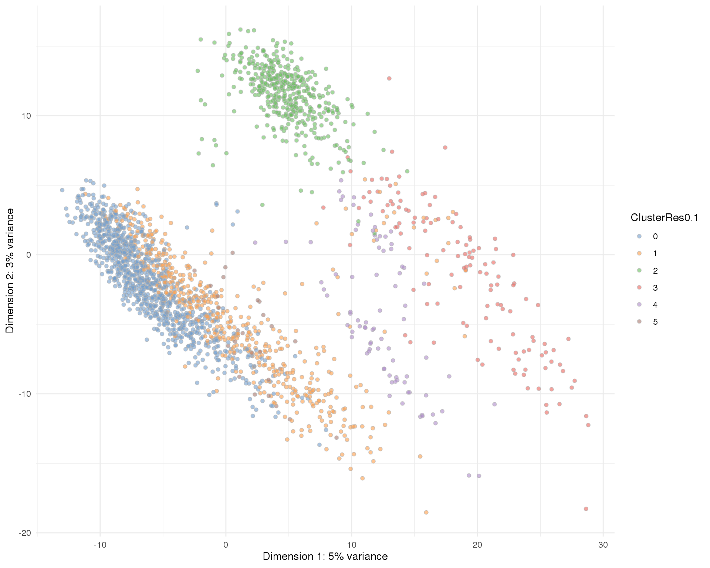
Res 0.2
plotPCA(sce, colour_by = 'ClusterRes0.2') + theme_minimal()Res 0.3
plotPCA(sce, colour_by = 'ClusterRes0.3') + theme_minimal()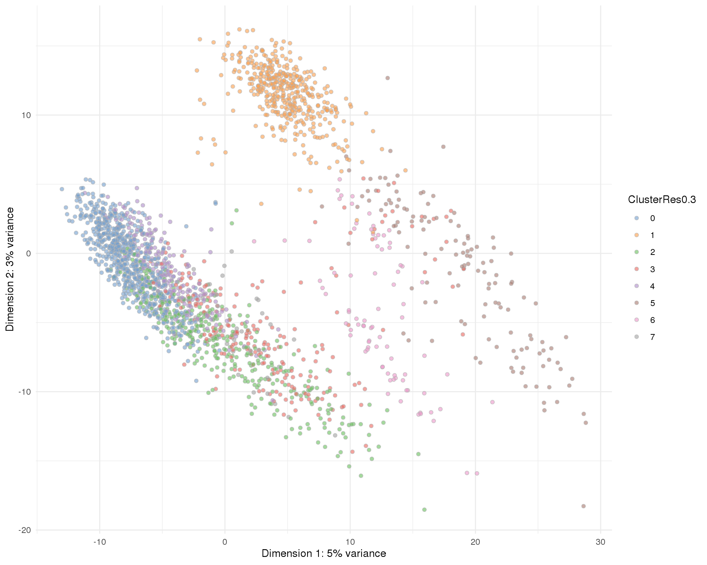
Res 0.4
plotPCA(sce, colour_by = 'ClusterRes0.4') + theme_minimal()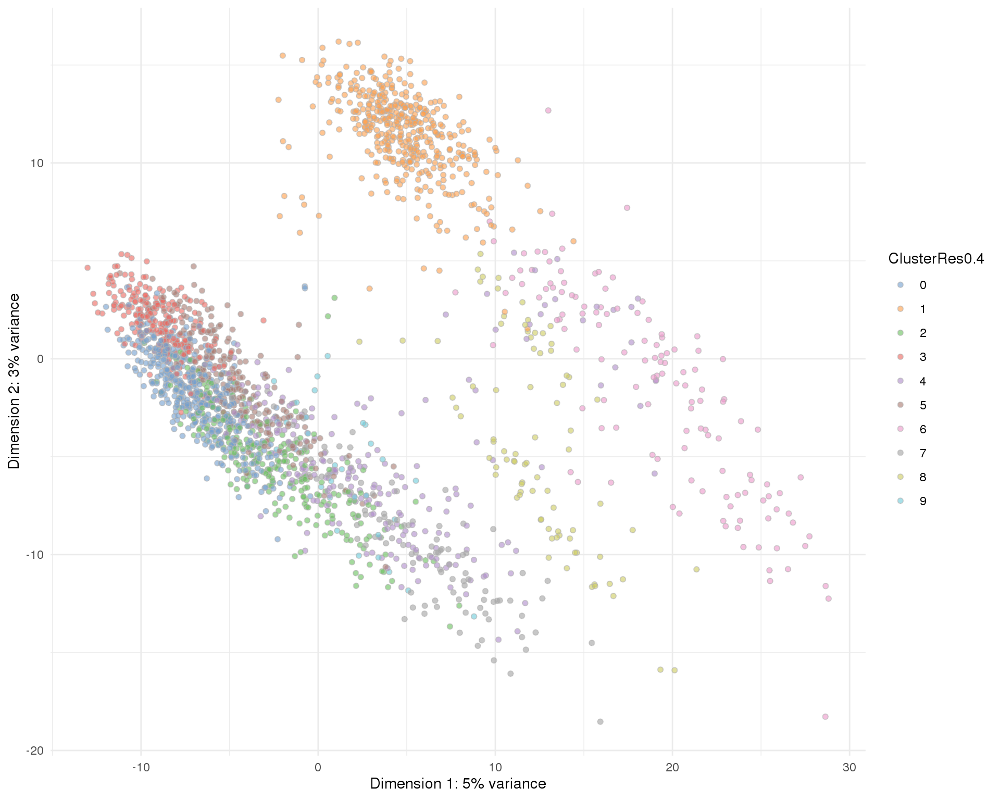
Res 0.5
plotPCA(sce, colour_by = 'ClusterRes0.5') + theme_minimal()Res 0.6
plotPCA(sce, colour_by = 'ClusterRes0.6') + theme_minimal()Res 0.7
plotPCA(sce, colour_by = 'ClusterRes0.7') + theme_minimal()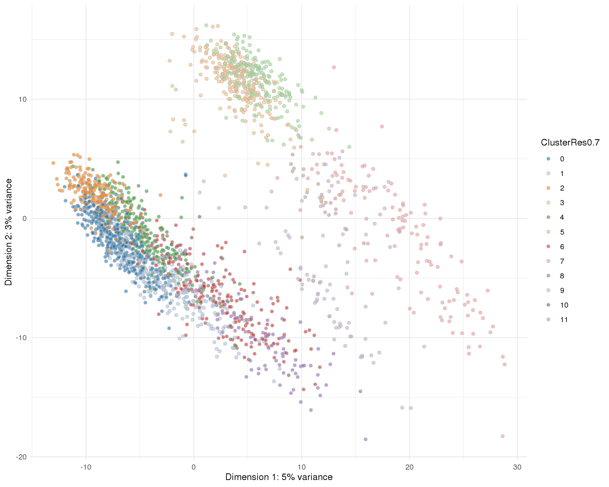
Res 0.8
plotPCA(sce, colour_by = 'ClusterRes0.8') + theme_minimal()Res 0.9
plotPCA(sce, colour_by = 'ClusterRes0.9') + theme_minimal()Res 1
plotPCA(sce, colour_by = 'ClusterRes1') + theme_minimal()t-SNE
src_list <- lapply(resolutions, function(res) {
src <- c(
"#### Res {{res}} {.unnumbered}",
"```{r res-tSNE-{{res}}}",
"plotTSNE(sce, colour_by = 'ClusterRes{{res}}') + theme_minimal()",
"```",
""
)
knit_expand(text = src)
})
out <- knit_child(text = unlist(src_list), options = list(cache = FALSE))Res 0
plotTSNE(sce, colour_by = 'ClusterRes0') + theme_minimal()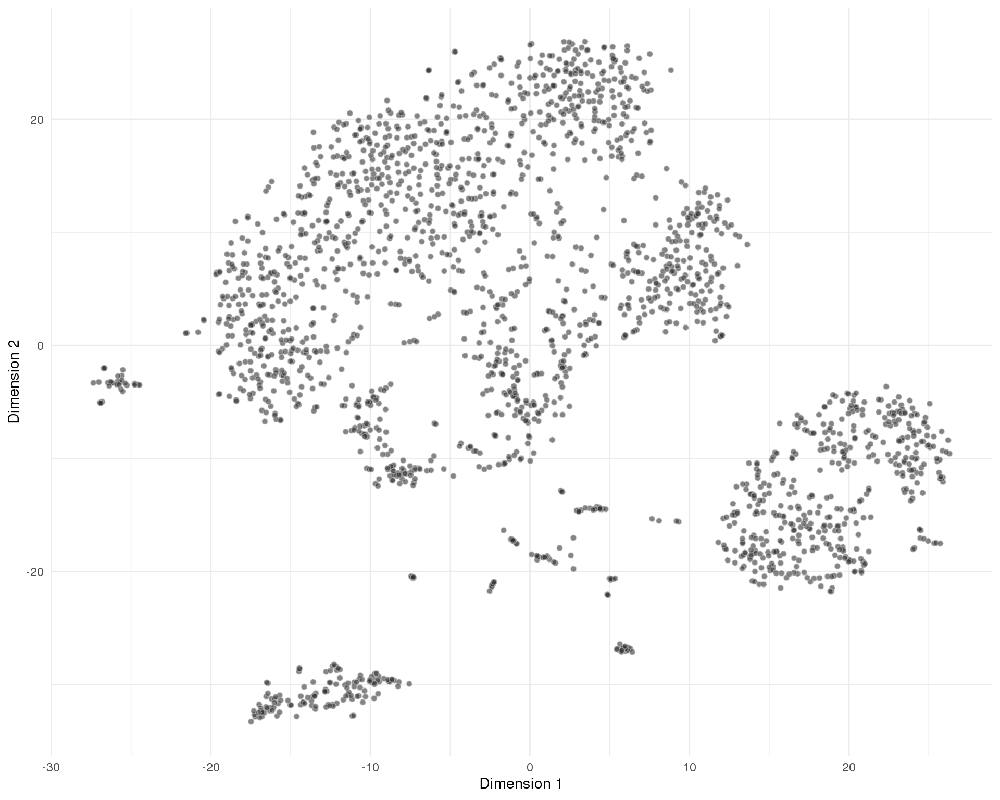
Res 0.1
plotTSNE(sce, colour_by = 'ClusterRes0.1') + theme_minimal()Res 0.2
plotTSNE(sce, colour_by = 'ClusterRes0.2') + theme_minimal()Res 0.3
plotTSNE(sce, colour_by = 'ClusterRes0.3') + theme_minimal()Res 0.4
plotTSNE(sce, colour_by = 'ClusterRes0.4') + theme_minimal()Res 0.5
plotTSNE(sce, colour_by = 'ClusterRes0.5') + theme_minimal()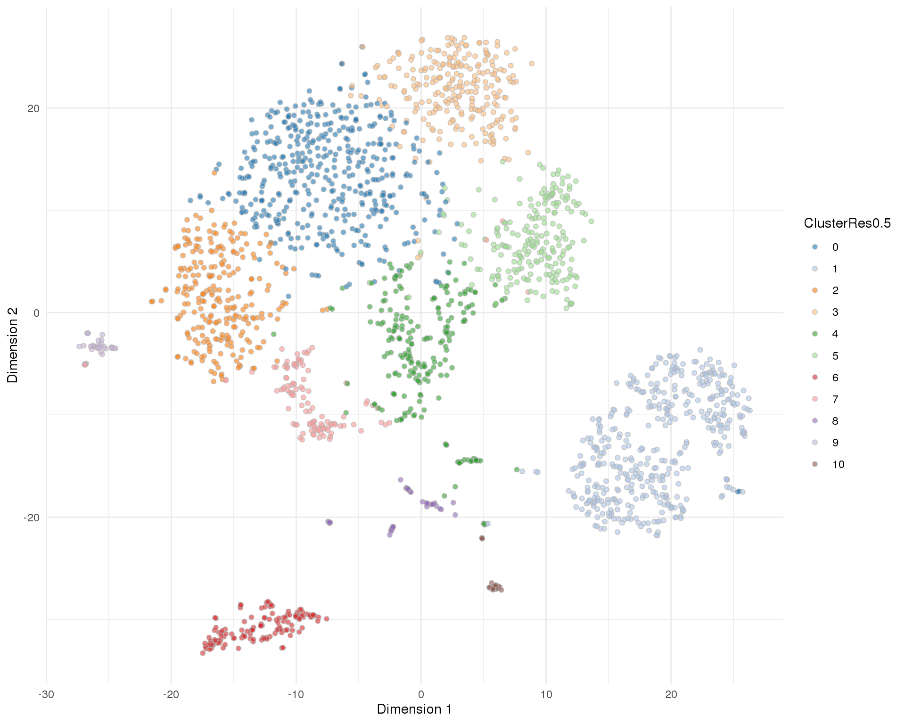
Res 0.6
plotTSNE(sce, colour_by = 'ClusterRes0.6') + theme_minimal()Res 0.7
plotTSNE(sce, colour_by = 'ClusterRes0.7') + theme_minimal()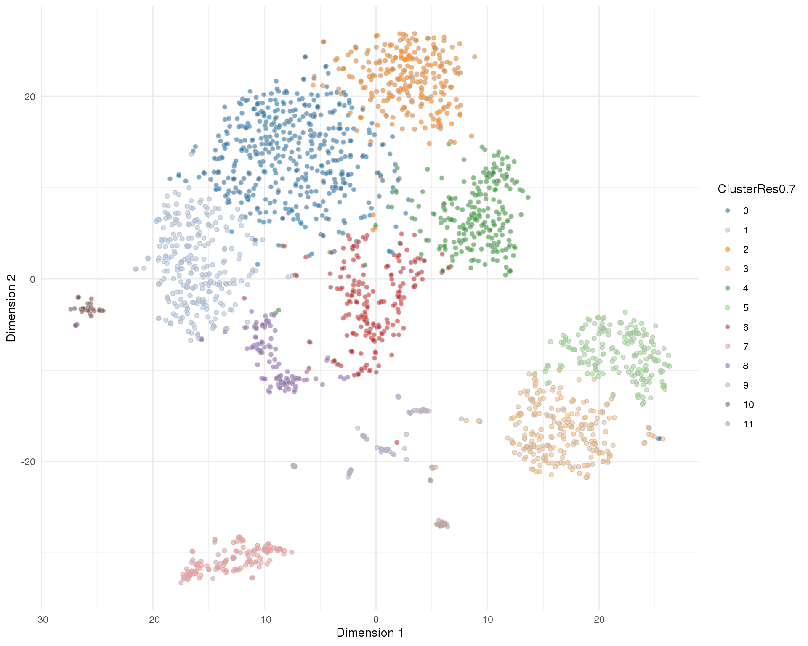
Res 0.8
plotTSNE(sce, colour_by = 'ClusterRes0.8') + theme_minimal()Res 0.9
plotTSNE(sce, colour_by = 'ClusterRes0.9') + theme_minimal()Res 1
plotTSNE(sce, colour_by = 'ClusterRes1') + theme_minimal()Clustering trees
Clustering trees show the relationship between clusterings at adjacent resolutions. Each cluster is represented as a node in a graph and the edges show the overlap between clusters.
Standard
Coloured by clustering resolution.
clustree(sce, prefix = "ClusterRes")Stability
Coloured by the SC3 stability metric.
clustree(sce, prefix = "ClusterRes", node_colour = "sc3_stability")Selection
res <- 0.8
col_data$Cluster <- col_data[[paste0("ClusterRes", res)]]
colData(sce) <- DataFrame(col_data)
n_clusts <- length(unique(col_data$Cluster))Based on these plots we will use a resolution of 0.8 which gives us 13 clusters.
Validation
To validate the clusters we will repeat some of our quality control plots separated by cluster. At this stage we just want to check that none of the clusters are obviously the result of technical factors.
Cluster
Clusters assigned by Seurat.
Count
ggplot(col_data, aes(x = Cluster, fill = Cluster)) +
geom_bar()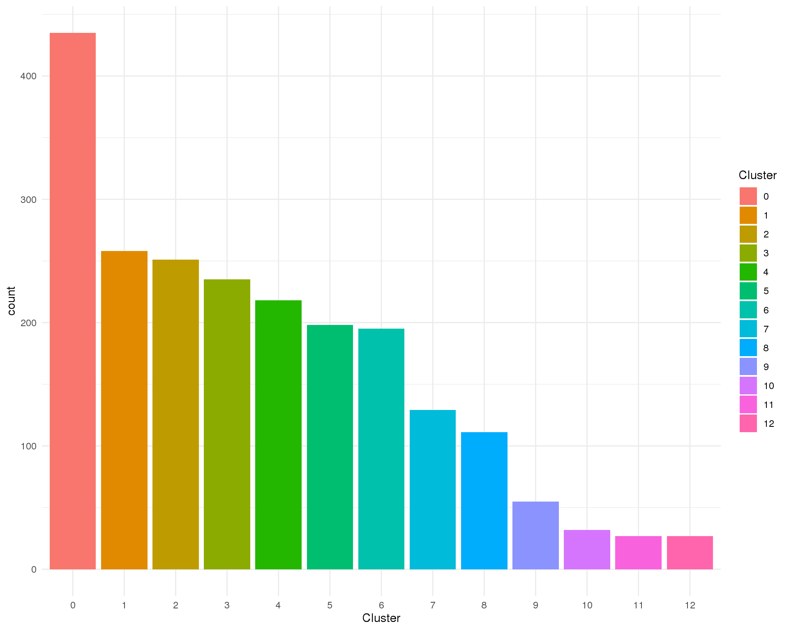
PCA
plotPCA(sce, colour_by = "Cluster", point_alpha = 1) +
scale_fill_discrete() +
theme_minimal()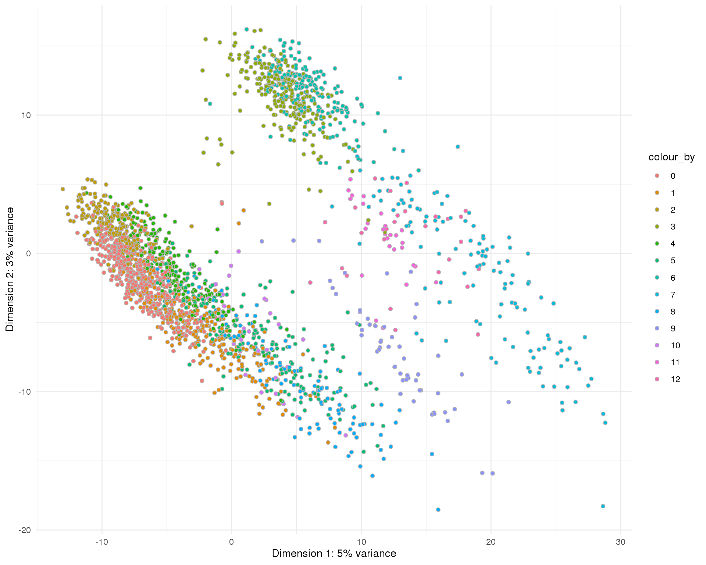
t-SNE
plotTSNE(sce, colour_by = "Cluster", point_alpha = 1) +
scale_fill_discrete() +
theme_minimal()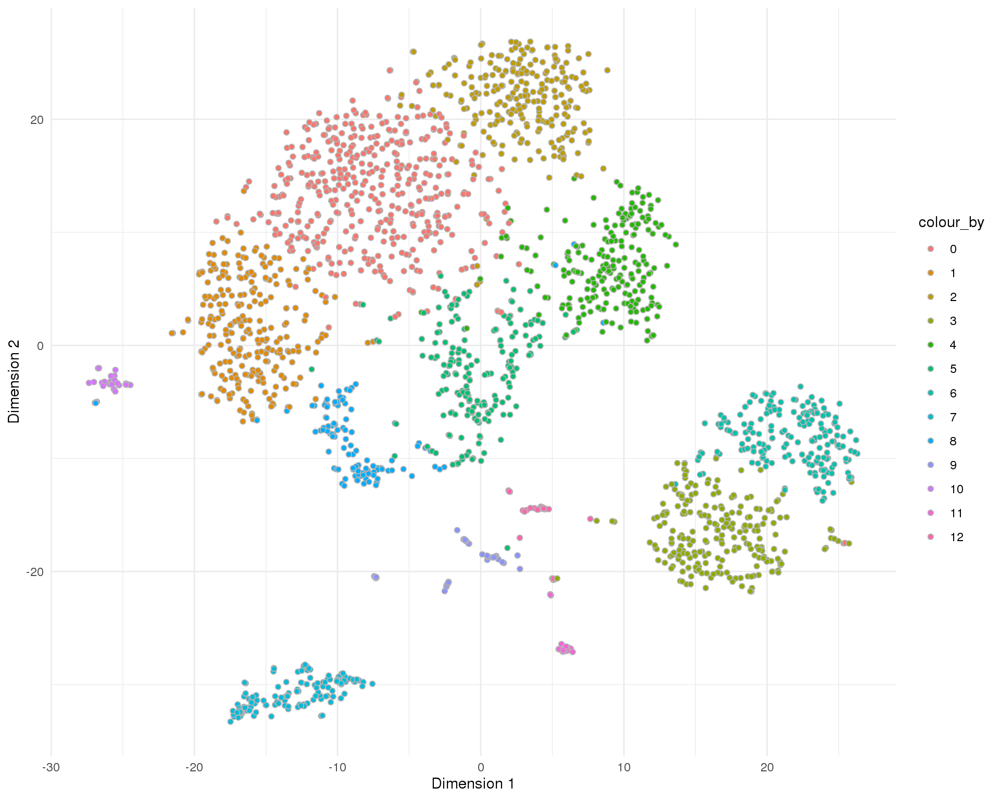
Cell cycle
Cell cycle phases assigned by scran.
Count
ggplot(col_data, aes(x = Cluster, fill = CellCycle)) +
geom_bar()Proportion
plot_data <- col_data %>%
group_by(Cluster, CellCycle) %>%
summarise(Count = n()) %>%
mutate(Prop = Count / sum(Count))
ggplot(plot_data, aes(x = Cluster, y = Prop, fill = CellCycle)) +
geom_col() +
ylab("Proportion of cluster")
PCA
plotPCA(sce, colour_by = "CellCycle", point_alpha = 1) +
scale_fill_discrete() +
theme_minimal()
t-SNE
plotTSNE(sce, colour_by = "CellCycle", point_alpha = 1) +
scale_fill_discrete() +
theme_minimal()Total counts
Total counts per cell.
Distribution
ggplot(col_data, aes(x = Cluster, y = log10_total_counts, colour = Cluster)) +
geom_violin() +
geom_sina(size = 0.5) +
theme(legend.position = "none")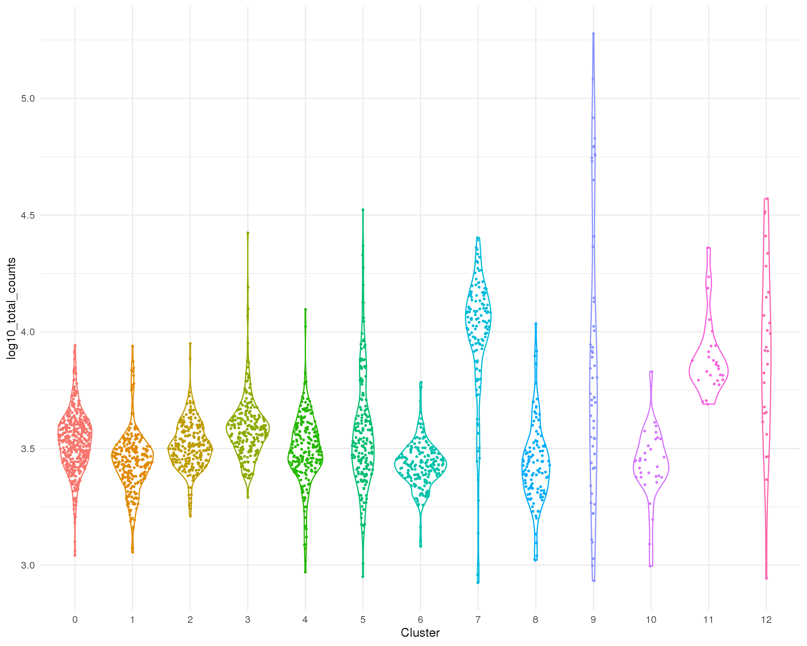
PCA
plotPCA(sce, colour_by = "log10_total_counts", point_alpha = 1) +
scale_fill_viridis_c() +
theme_minimal()t-SNE
plotTSNE(sce, colour_by = "log10_total_counts", point_alpha = 1) +
scale_fill_viridis_c()+
theme_minimal()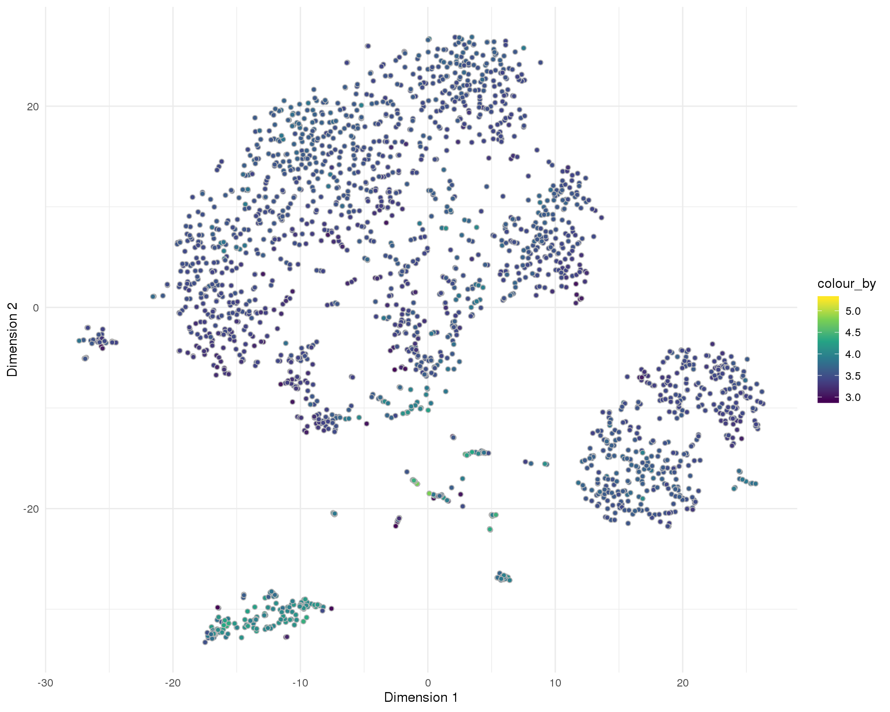
Total features
Total number of expressed features per cell.
Distribution
ggplot(col_data,
aes(x = Cluster, y = log10_total_features_by_counts, colour = Cluster)) +
geom_violin() +
geom_sina(size = 0.5) +
theme(legend.position = "none")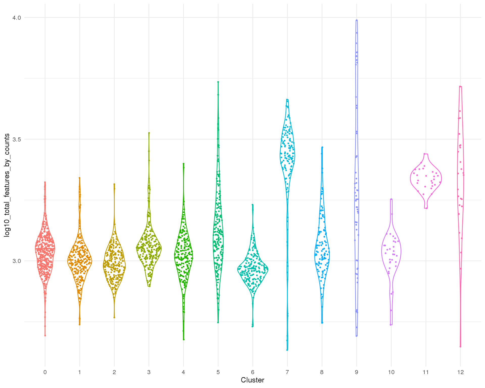
PCA
plotPCA(sce, colour_by = "log10_total_features_by_counts", point_alpha = 1) +
scale_fill_viridis_c() +
theme_minimal()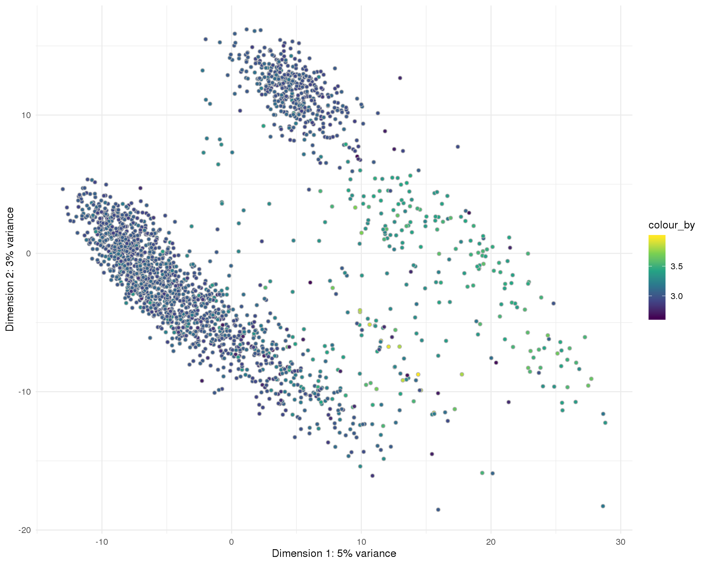
t-SNE
plotTSNE(sce, colour_by = "log10_total_features_by_counts", point_alpha = 1) +
scale_fill_viridis_c()+
theme_minimal()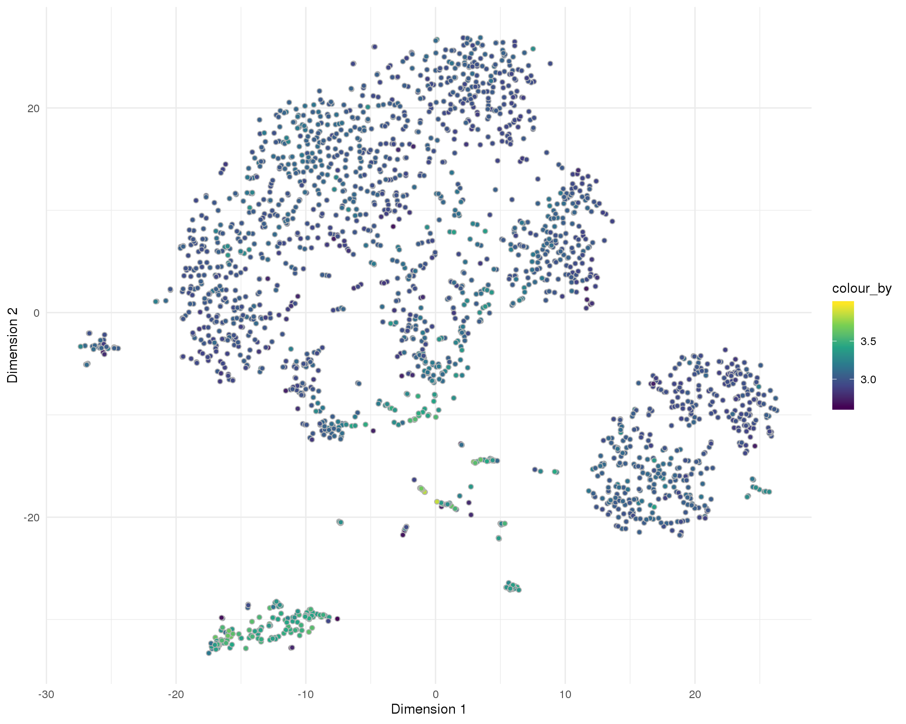
Mitochondrial genes
Percentage of counts assigned to mitochondrial genes per cell.
Distribution
ggplot(col_data, aes(x = Cluster, y = pct_counts_MT, colour = Cluster)) +
geom_violin() +
geom_sina(size = 0.5) +
theme(legend.position = "none")PCA
plotPCA(sce, colour_by = "pct_counts_MT", point_alpha = 1) +
scale_fill_viridis_c() +
theme_minimal()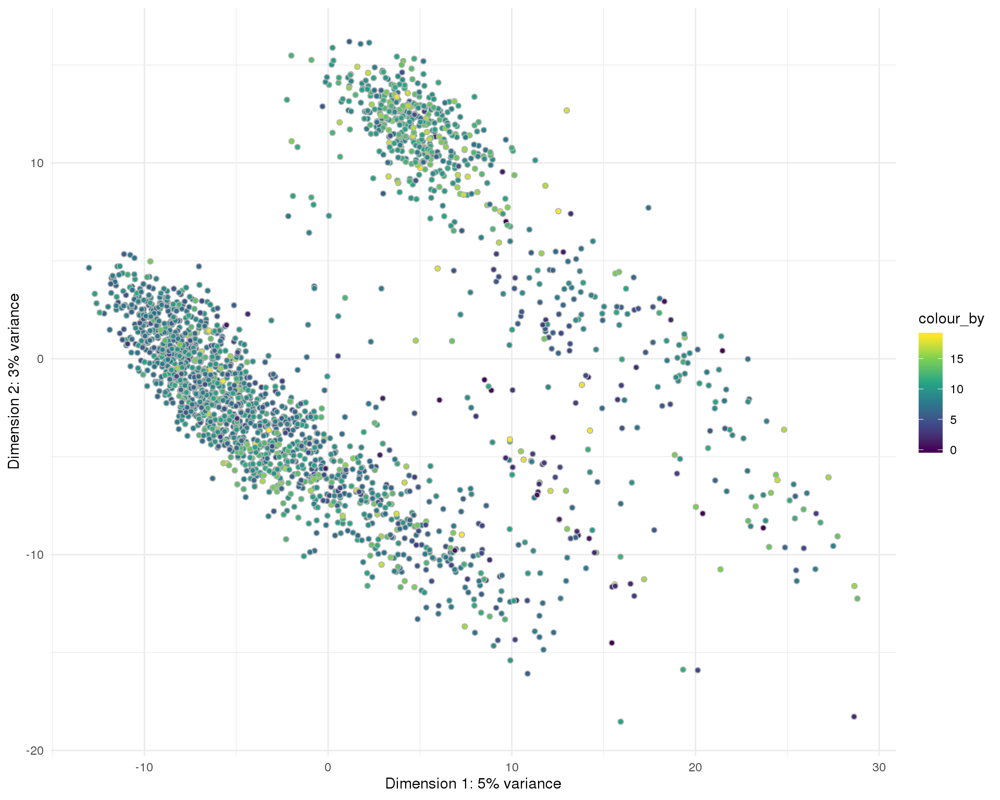
t-SNE
plotTSNE(sce, colour_by = "pct_counts_MT", point_alpha = 1) +
scale_fill_viridis_c()+
theme_minimal()Summary
Parameters
This table describes parameters used and set in this document.
params <- list(
list(
Parameter = "n_pcs",
Value = n_pcs,
Description = "Selected number of principal components for clustering"
),
list(
Parameter = "resolutions",
Value = resolutions,
Description = "Range of possible clustering resolutions"
),
list(
Parameter = "res",
Value = res,
Description = "Selected resolution parameter for clustering"
),
list(
Parameter = "n_clusts",
Value = n_clusts,
Description = "Number of clusters produced by selected resolution"
)
)
params <- toJSON(params, pretty = TRUE)
kable(fromJSON(params))| Parameter | Value | Description |
|---|---|---|
| n_pcs | 24 | Selected number of principal components for clustering |
| resolutions | c(0, 0.1, 0.2, 0.3, 0.4, 0.5, 0.6, 0.7, 0.8, 0.9, 1) | Range of possible clustering resolutions |
| res | 0.8 | Selected resolution parameter for clustering |
| n_clusts | 13 | Number of clusters produced by selected resolution |
Output files
This table describes the output files produced by this document. Right click and Save Link As… to download the results.
write_rds(sce, PATHS$sce_clust, compress = "bz", compression = 9)
write_lines(params, path(OUT_DIR, "parameters.json"))
kable(data.frame(
File = c(
download_link("parameters.json", OUT_DIR)
),
Description = c(
"Parameters set and used in this analysis"
)
))| File | Description |
|---|---|
| parameters.json | Parameters set and used in this analysis |
Session information
sessioninfo::session_info()─ Session info ──────────────────────────────────────────────────────────
setting value
version R version 3.6.0 (2019-04-26)
os CentOS release 6.7 (Final)
system x86_64, linux-gnu
ui X11
language (EN)
collate en_US.UTF-8
ctype en_US.UTF-8
tz Australia/Melbourne
date 2019-06-25
─ Packages ──────────────────────────────────────────────────────────────
! package * version date lib source
ape 5.3 2019-03-17 [1] CRAN (R 3.6.0)
assertthat 0.2.1 2019-03-21 [1] CRAN (R 3.6.0)
backports 1.1.4 2019-04-10 [1] CRAN (R 3.6.0)
beeswarm 0.2.3 2016-04-25 [1] CRAN (R 3.6.0)
bibtex 0.4.2 2017-06-30 [1] CRAN (R 3.6.0)
Biobase * 2.44.0 2019-05-02 [1] Bioconductor
BiocGenerics * 0.30.0 2019-05-02 [1] Bioconductor
BiocNeighbors 1.2.0 2019-05-02 [1] Bioconductor
BiocParallel * 1.18.0 2019-05-03 [1] Bioconductor
BiocSingular * 1.0.0 2019-05-02 [1] Bioconductor
bitops 1.0-6 2013-08-17 [1] CRAN (R 3.6.0)
broom 0.5.2 2019-04-07 [1] CRAN (R 3.6.0)
caTools 1.17.1.2 2019-03-06 [1] CRAN (R 3.6.0)
cellranger 1.1.0 2016-07-27 [1] CRAN (R 3.6.0)
checkmate 1.9.3 2019-05-03 [1] CRAN (R 3.6.0)
cli 1.1.0 2019-03-19 [1] CRAN (R 3.6.0)
P cluster 2.0.9 2019-05-01 [5] CRAN (R 3.6.0)
clustree * 0.4.0 2019-04-18 [1] CRAN (R 3.6.0)
P codetools 0.2-16 2018-12-24 [5] CRAN (R 3.6.0)
colorspace 1.4-1 2019-03-18 [1] CRAN (R 3.6.0)
conflicted * 1.0.3 2019-05-01 [1] CRAN (R 3.6.0)
cowplot 0.9.4 2019-01-08 [1] CRAN (R 3.6.0)
crayon 1.3.4 2017-09-16 [1] CRAN (R 3.6.0)
data.table 1.12.2 2019-04-07 [1] CRAN (R 3.6.0)
DelayedArray * 0.10.0 2019-05-02 [1] Bioconductor
DelayedMatrixStats 1.6.0 2019-05-02 [1] Bioconductor
digest 0.6.19 2019-05-20 [1] CRAN (R 3.6.0)
dplyr * 0.8.1 2019-05-14 [1] CRAN (R 3.6.0)
dqrng 0.2.1 2019-05-17 [1] CRAN (R 3.6.0)
dynamicTreeCut 1.63-1 2016-03-11 [1] CRAN (R 3.6.0)
edgeR 3.26.4 2019-05-27 [1] Bioconductor
evaluate 0.14 2019-05-28 [1] CRAN (R 3.6.0)
farver 1.1.0 2018-11-20 [1] CRAN (R 3.6.0)
fitdistrplus 1.0-14 2019-01-23 [1] CRAN (R 3.6.0)
forcats * 0.4.0 2019-02-17 [1] CRAN (R 3.6.0)
fs * 1.3.1 2019-05-06 [1] CRAN (R 3.6.0)
future 1.13.0 2019-05-08 [1] CRAN (R 3.6.0)
future.apply 1.3.0 2019-06-18 [1] CRAN (R 3.6.0)
gbRd 0.4-11 2012-10-01 [1] CRAN (R 3.6.0)
gdata 2.18.0 2017-06-06 [1] CRAN (R 3.6.0)
generics 0.0.2 2018-11-29 [1] CRAN (R 3.6.0)
GenomeInfoDb * 1.20.0 2019-05-02 [1] Bioconductor
GenomeInfoDbData 1.2.1 2019-06-19 [1] Bioconductor
GenomicRanges * 1.36.0 2019-05-02 [1] Bioconductor
ggbeeswarm 0.6.0 2017-08-07 [1] CRAN (R 3.6.0)
ggforce * 0.2.2 2019-04-23 [1] CRAN (R 3.6.0)
ggplot2 * 3.2.0 2019-06-16 [1] CRAN (R 3.6.0)
ggraph * 1.0.2 2018-07-07 [1] CRAN (R 3.6.0)
ggrepel 0.8.1 2019-05-07 [1] CRAN (R 3.6.0)
ggridges 0.5.1 2018-09-27 [1] CRAN (R 3.6.0)
git2r 0.25.2 2019-03-19 [1] CRAN (R 3.6.0)
globals 0.12.4 2018-10-11 [1] CRAN (R 3.6.0)
glue 1.3.1 2019-03-12 [1] CRAN (R 3.6.0)
gplots 3.0.1.1 2019-01-27 [1] CRAN (R 3.6.0)
gridExtra 2.3 2017-09-09 [1] CRAN (R 3.6.0)
gtable 0.3.0 2019-03-25 [1] CRAN (R 3.6.0)
gtools 3.8.1 2018-06-26 [1] CRAN (R 3.6.0)
haven 2.1.0 2019-02-19 [1] CRAN (R 3.6.0)
here * 0.1 2017-05-28 [1] CRAN (R 3.6.0)
highr 0.8 2019-03-20 [1] CRAN (R 3.6.0)
hms 0.4.2 2018-03-10 [1] CRAN (R 3.6.0)
htmltools 0.3.6 2017-04-28 [1] CRAN (R 3.6.0)
htmlwidgets 1.3 2018-09-30 [1] CRAN (R 3.6.0)
httr 1.4.0 2018-12-11 [1] CRAN (R 3.6.0)
ica 1.0-2 2018-05-24 [1] CRAN (R 3.6.0)
igraph 1.2.4.1 2019-04-22 [1] CRAN (R 3.6.0)
IRanges * 2.18.1 2019-05-31 [1] Bioconductor
irlba 2.3.3 2019-02-05 [1] CRAN (R 3.6.0)
jsonlite * 1.6 2018-12-07 [1] CRAN (R 3.6.0)
P KernSmooth 2.23-15 2015-06-29 [5] CRAN (R 3.6.0)
knitr * 1.23 2019-05-18 [1] CRAN (R 3.6.0)
labeling 0.3 2014-08-23 [1] CRAN (R 3.6.0)
P lattice 0.20-38 2018-11-04 [5] CRAN (R 3.6.0)
lazyeval 0.2.2 2019-03-15 [1] CRAN (R 3.6.0)
limma 3.40.2 2019-05-17 [1] Bioconductor
listenv 0.7.0 2018-01-21 [1] CRAN (R 3.6.0)
lmtest 0.9-37 2019-04-30 [1] CRAN (R 3.6.0)
locfit 1.5-9.1 2013-04-20 [1] CRAN (R 3.6.0)
lsei 1.2-0 2017-10-23 [1] CRAN (R 3.6.0)
lubridate 1.7.4 2018-04-11 [1] CRAN (R 3.6.0)
magrittr 1.5 2014-11-22 [1] CRAN (R 3.6.0)
P MASS 7.3-51.4 2019-04-26 [5] CRAN (R 3.6.0)
P Matrix 1.2-17 2019-03-22 [5] CRAN (R 3.6.0)
matrixStats * 0.54.0 2018-07-23 [1] CRAN (R 3.6.0)
memoise 1.1.0 2017-04-21 [1] CRAN (R 3.6.0)
metap 1.1 2019-02-06 [1] CRAN (R 3.6.0)
modelr 0.1.4 2019-02-18 [1] CRAN (R 3.6.0)
munsell 0.5.0 2018-06-12 [1] CRAN (R 3.6.0)
P nlme 3.1-139 2019-04-09 [5] CRAN (R 3.6.0)
npsurv 0.4-0 2017-10-14 [1] CRAN (R 3.6.0)
pbapply 1.4-0 2019-02-05 [1] CRAN (R 3.6.0)
pillar 1.4.1 2019-05-28 [1] CRAN (R 3.6.0)
pkgconfig 2.0.2 2018-08-16 [1] CRAN (R 3.6.0)
plotly 4.9.0 2019-04-10 [1] CRAN (R 3.6.0)
plyr 1.8.4 2016-06-08 [1] CRAN (R 3.6.0)
png 0.1-7 2013-12-03 [1] CRAN (R 3.6.0)
polyclip 1.10-0 2019-03-14 [1] CRAN (R 3.6.0)
purrr * 0.3.2 2019-03-15 [1] CRAN (R 3.6.0)
R.methodsS3 1.7.1 2016-02-16 [1] CRAN (R 3.6.0)
R.oo 1.22.0 2018-04-22 [1] CRAN (R 3.6.0)
R.utils 2.9.0 2019-06-13 [1] CRAN (R 3.6.0)
R6 2.4.0 2019-02-14 [1] CRAN (R 3.6.0)
RANN 2.6.1 2019-01-08 [1] CRAN (R 3.6.0)
RColorBrewer 1.1-2 2014-12-07 [1] CRAN (R 3.6.0)
Rcpp 1.0.1 2019-03-17 [1] CRAN (R 3.6.0)
RCurl 1.95-4.12 2019-03-04 [1] CRAN (R 3.6.0)
Rdpack 0.11-0 2019-04-14 [1] CRAN (R 3.6.0)
readr * 1.3.1 2018-12-21 [1] CRAN (R 3.6.0)
readxl 1.3.1 2019-03-13 [1] CRAN (R 3.6.0)
reshape2 1.4.3 2017-12-11 [1] CRAN (R 3.6.0)
reticulate 1.12 2019-04-12 [1] CRAN (R 3.6.0)
rlang 0.3.4 2019-04-07 [1] CRAN (R 3.6.0)
rmarkdown 1.13 2019-05-22 [1] CRAN (R 3.6.0)
ROCR 1.0-7 2015-03-26 [1] CRAN (R 3.6.0)
rprojroot 1.3-2 2018-01-03 [1] CRAN (R 3.6.0)
rstudioapi 0.10 2019-03-19 [1] CRAN (R 3.6.0)
rsvd 1.0.1 2019-06-02 [1] CRAN (R 3.6.0)
Rtsne 0.15 2018-11-10 [1] CRAN (R 3.6.0)
rvest 0.3.4 2019-05-15 [1] CRAN (R 3.6.0)
S4Vectors * 0.22.0 2019-05-02 [1] Bioconductor
scales 1.0.0 2018-08-09 [1] CRAN (R 3.6.0)
scater * 1.12.2 2019-05-24 [1] Bioconductor
scran * 1.12.1 2019-05-27 [1] Bioconductor
sctransform 0.2.0 2019-04-12 [1] CRAN (R 3.6.0)
SDMTools 1.1-221.1 2019-04-18 [1] CRAN (R 3.6.0)
sessioninfo 1.1.1 2018-11-05 [1] CRAN (R 3.6.0)
Seurat 3.0.2 2019-06-14 [1] CRAN (R 3.6.0)
SingleCellExperiment * 1.6.0 2019-05-02 [1] Bioconductor
statmod 1.4.32 2019-05-29 [1] CRAN (R 3.6.0)
stringi 1.4.3 2019-03-12 [1] CRAN (R 3.6.0)
stringr * 1.4.0 2019-02-10 [1] CRAN (R 3.6.0)
SummarizedExperiment * 1.14.0 2019-05-02 [1] Bioconductor
P survival 2.44-1.1 2019-04-01 [5] CRAN (R 3.6.0)
tibble * 2.1.3 2019-06-06 [1] CRAN (R 3.6.0)
tidygraph 1.1.2 2019-02-18 [1] CRAN (R 3.6.0)
tidyr * 0.8.3 2019-03-01 [1] CRAN (R 3.6.0)
tidyselect 0.2.5 2018-10-11 [1] CRAN (R 3.6.0)
tidyverse * 1.2.1 2017-11-14 [1] CRAN (R 3.6.0)
tsne 0.1-3 2016-07-15 [1] CRAN (R 3.6.0)
tweenr 1.0.1 2018-12-14 [1] CRAN (R 3.6.0)
vipor 0.4.5 2017-03-22 [1] CRAN (R 3.6.0)
viridis 0.5.1 2018-03-29 [1] CRAN (R 3.6.0)
viridisLite 0.3.0 2018-02-01 [1] CRAN (R 3.6.0)
whisker 0.3-2 2013-04-28 [1] CRAN (R 3.6.0)
withr 2.1.2 2018-03-15 [1] CRAN (R 3.6.0)
workflowr 1.4.0 2019-06-08 [1] CRAN (R 3.6.0)
xfun 0.7 2019-05-14 [1] CRAN (R 3.6.0)
xml2 1.2.0 2018-01-24 [1] CRAN (R 3.6.0)
XVector 0.24.0 2019-05-02 [1] Bioconductor
yaml 2.2.0 2018-07-25 [1] CRAN (R 3.6.0)
zlibbioc 1.30.0 2019-05-02 [1] Bioconductor
zoo 1.8-6 2019-05-28 [1] CRAN (R 3.6.0)
[1] /group/bioi1/luke/analysis/OzSingleCells2019/packrat/lib/x86_64-pc-linux-gnu/3.6.0
[2] /group/bioi1/luke/analysis/OzSingleCells2019/packrat/lib-ext/x86_64-pc-linux-gnu/3.6.0
[3] /group/bioi1/luke/analysis/OzSingleCells2019/packrat/lib-R/x86_64-pc-linux-gnu/3.6.0
[4] /home/luke.zappia/R/x86_64-pc-linux-gnu-library/3.6
[5] /usr/local/installed/R/3.6.0/lib64/R/library
P ── Loaded and on-disk path mismatch.